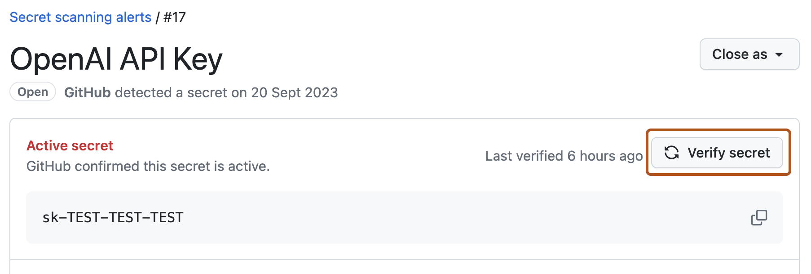
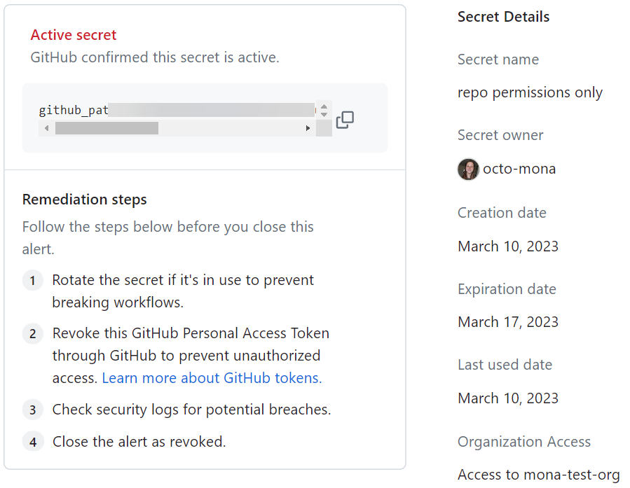

Learn about additional features that can help you evaluate alerts and prioritize their remediation, such as checking a secret's validity.
There are some additional features that can help you to evaluate alerts in order to better prioritize and manage them. You can:
Validity checks help you prioritize alerts by telling you which secrets are active or inactive. An active secret is one that could still be exploited, so these alerts should be reviewed and remediated as a priority.
By default, GitHub checks the validity of GitHub tokens and displays the validation status of the token in the alert view.
Organizations using GitHub Team, GitHub Enterprise Cloud with a license for GitHub Secret Protection, or GitHub Enterprise Server with a license for GitHub Secret Protection can also enable validity checks for partner patterns. For more information, see Checking a secret's validity.
| Validity | Status | Result |
|---|---|---|
| Active secret | active |
GitHub checked with this secret's provider and found that the secret is active |
| Possibly active secret | unknown |
GitHub does not support validation checks for this token type yet |
| Possibly active secret | unknown |
GitHub could not verify this secret |
| Secret inactive | inactive |
You should make sure no unauthorized access has already occurred |
Validity checks for partner patterns are available for the following repository types:
For information on how to enable validity checks for partner patterns, see Enabling validity checks for your repository, and for information on which partner patterns are currently supported, see Supported secret scanning patterns.
You can enable validity checks for partner patterns by using security configurations, either set at the enterprise or at the organization level. See Creating a custom security configuration for your enterprise and Creating a custom security configuration.
For information on which partner patterns are currently supported, see Supported secret scanning patterns.
You can use the REST API to retrieve a list of the most recent validation status for each of your tokens. For more information, see REST API endpoints for secret scanning in the REST API documentation. You can also use webhooks to be notified of activity relating to a secret scanning alert. For more information, see the secret_scanning_alert event in Webhook events and payloads.
Once you have enabled validity checks for partner patterns for your repository, you can perform an "on-demand" validity check for any supported secret by clicking Verify secret in the alert view. GitHub will send the pattern to the relevant partner and display the validation status of the secret in the alert view.

Note
Metadata for GitHub tokens is currently in public preview and subject to change.
In the view for an active GitHub token alert, you can review certain metadata about the token. This metadata may help you identify the token and decide what remediation steps to take.
Tokens, like personal access token and other credentials, are considered personal information. For more information about using GitHub tokens, see GitHub's Privacy Statement and Acceptable Use Policies.

Metadata for GitHub tokens is available for active tokens in any repository with secret scanning enabled. If a token has been revoked or its status cannot be validated, metadata will not be available. GitHub auto-revokes GitHub tokens in public repositories, so metadata for GitHub tokens in public repositories is unlikely to be available. The following metadata is available for active GitHub tokens:
| Metadata | Description |
|---|---|
| Secret name | The name given to the GitHub token by its creator |
| Secret owner | The GitHub handle of the token's owner |
| Created on | Date the token was created |
| Expired on | Date the token expired |
| Last used on | Date the token was last used |
| Access | Whether the token has organization access |
Note
Extended metadata checks for tokens is in public preview and subject to change.
In the view for an active GitHub token alert, you can see extended metadata information, such as owner and contact details.
The following table shows all the available metadata. Note that metadata checks are currently limited to OpenAI API, Google OAuth, and Slack tokens, and the metadata shown for each token may represent only a subset of what exists.
| Metadata type | Description |
|---|---|
| Owner ID | Provider’s unique identifier for the user or service account that owns the secret |
| Owner name | Human‑readable username or display name of the secret’s owner |
| Owner email | Email address associated with the owner |
| Org name | Name of the organization / workspace / project the secret belongs to |
| Org ID | Provider’s unique identifier for that organization |
| Secret issued date | Timestamp when the secret (token or key) was created or most recently issued |
| Secret expiry date | Timestamp when the secret is scheduled to expire |
| Secret name | Human‑assigned display name or label for the secret |
| Secret ID | Provider’s unique identifier for the secret |
In the alert view, you can review any labels assigned to the alert. The labels provide additional details about the alert, which can inform the approach you take for remediation.
Secret scanning alerts can have the following labels assigned to them. Depending on the labels assigned, you'll see additional information in the alert view.
| Label | Description | Alert view information |
|---|---|---|
public leak |
The secret detected in your repository has also been found as publicly leaked by at least one of GitHub's scans of code, discussions, gists, issues, pull requests, and wikis. This may require you to address the alert with greater urgency, or remediate the alert differently compared to a privately exposed token. | You'll see links to any specific public locations where the leaked secret has been detected. |
multi-repo |
The secret detected in your repository has been found across multiple repositories in your organization or enterprise. This information may help you more easily dedupe the alert across your organization or enterprise. | If you have appropriate permissions, you'll see links to any specific alerts for the same secret in your organization or enterprise. |